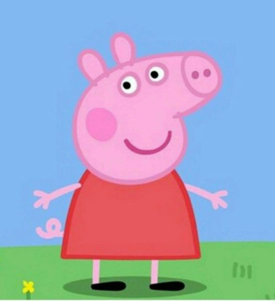
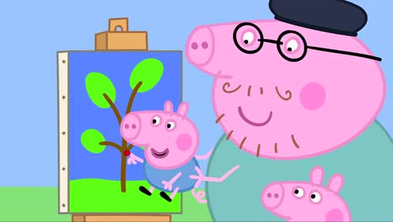

My Favorite cartoon
佩佩豬(Peppa Pig)
Peppa Pig Songs
成員介紹
佩佩豬,喬治豬,豬爸,豬媽.
其中佩佩豬是<粉紅豬小妹>中的主角.
喜歡的原因
都有超生動的表情.
看到他們的動畫很療癒.
Go to page 2

回首頁
| 豬爸 |
 |
| 豬媽 |
 |
| 佩佩豬 |
|
| 喬治豬 |
 |
*特徵介紹*
- 豬爸
- -佩佩和喬治的爸爸。喜歡自誇。
- 豬媽
- -佩佩和喬治的媽媽。她經常用家裡的電腦工作。
- 佩佩豬
- -動畫主人翁。她喜歡在泥巴水坑裡跳上跳下、和她的泰迪熊Teddy玩耍、上學前遊戲班和裝扮。
- 喬治豬
- -佩佩的弟弟。通常都拿著他的綠色玩具恐龍－「恐龍先生」。